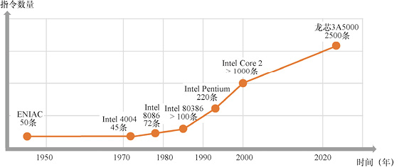
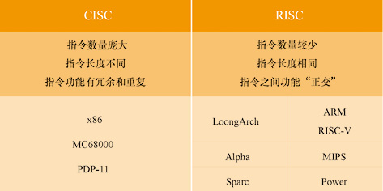
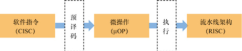

首页 > 编程笔记
CISC和RISC的区别以及对比
布莱恩·克尼汉（Brian Kernighan）曾经说过：

图1：布莱恩·克尼汉（Brian Kernighan）
在计算机发展过程中，指令集形成了两种风格，即复杂指令集计算机（Complex Instruction Set Computer，CISC）和精简指令集计算机（Reduced Instruction Set Computer，RISC）。
一起来回顾一下这两者的渊源。
早期的计算机指令集都很简单，比如，ENIAC 主要用于数学计算，指令集只包含 50 条指令；1971 年发布的微处理器 Intel 4004 的指令集也只有 45 条。
随后的计算机不断增加功能，指令集也越来越复杂化。到 20 世纪 80 年代，进入个人计算机时代，指令集包含的指令数量迅速增长（见图2），比如：
为什么 CPU 的指令集会越来越庞大？主要有两个原因。
第一，晶体管技术取代电子管技术后，CPU 制造起来越来越容易，让 CPU 指令支持更多功能具备了可能性。
例如 Intel 在 Pentium 中增加的 MMX 指令集，主要面向多媒体的音频、视频，可以在一条指令中对多个数据进行编码、解码，其性能远远超过以前的型号。
第二，计算机从单纯科学计算走向个人计算机，应用软件越来越丰富，程序员希望指令集功能更强大，来方便编写程序。
例如，早期计算机每条指令只能访问一个内存单元，而“串指令”可以一次对连续的多个内存单元进行读写，这样在开发相同功能的软件时，汇编代码更为简短。
但是，指令集的增长也带来了很多弊端：
统计表明，计算机中各种指令的使用率相差悬殊，可以总结为“二八原则”：CPU 中最常用的 20% 指令，占用 80％ 的执行频率。使用最频繁的指令往往是加减运算、条件判断、内存访问这些最原始的指令。
也就是说，人们为越来越复杂的指令系统付出了很大的设计代价，而实际上增加的指令被使用的机会是很低的。
精简指令集的设想正是受此启发——指令集应该只包含最常用的少量指令。
指令集应该尽可能符合“正交性”，即每条指令都实现某一方面的独立功能，指令之间没有重复和冗余的功能，所有指令组合起来能够实现计算机的全部功能。按照这个原则设计而成的计算机称为 RISC。
与 RISC 相区别的是 CISC。RISC 计算机指令条数一般不超过 100 条，每条指令长度相同，二进制编码遵循统一的规格，非常便于实现流水线式计算机和编译器调度。
一般认为 1975 年开始研制的 IBM 801 是最早开始设计的 RISC 处理器。20 世纪 90 年代以后出现的新指令集基本都属于 RISC。到现在还在大量使用的主流 CISC 应该只剩下一种了，即 Intel 公司的 x86 指令集。
CISC 和 RISC 的对比如图3所示。
历史经过“简单—复杂—再简单”的循环反复，又回到了“简单化”的方向上。
RISC 天生具有便于实现流水线架构的优点。RISC 指令集清晰简洁，容易在电路的硬件层面进行分析和优化，使用 RISC 指令集的 CPU 能够以相对简单的电路达到较高的主频和性能。
20 世纪 90 年代的处理器市场上，高主频、高性能 CPU 基本被 RISC 占领。
CISC 厂商痛定思痛，决心找到在保持指令集不变的前提下，解决性能问题的方法。保持指令集不变的根本原因是坚持兼容原则，避免影响生态、失去用户。
CISC 厂商发现，CISC 指令集可以采用两级译码的方法转换成 RISC，如图4所示。
首先，CPU 对运行的 CISC 指令先进行一种“预译码”转换，生成一种内部指令“微指令”，也叫微操作（μOP）。微指令是 CPU 内部使用的，对软件不可见。微指令完全采用 RISC 的设计思想，对微指令的执行过程完全可以采用流水线架构。
这样，一个 CPU 既可以执行 CISC 指令集的软件、又可以达到 RISC 架构的相同性能。
CISC 和 RISC 的融合，给 CISC 赋予了新的内涵：

图5：Intel 80486 五级流水线
几点说明：
现在的 Intel CPU 大多是外表披着 CISC 外壳、里面都是 RISC 的结构。
在更复杂的计算机中，指令集包含的指令条数会更多，一般至少会有几十条，多的可以达到上千条。为什么会这么多呢？我们以龙芯3号的指令集为例，来看一看为什么会包含这么多的指令。
LoongArch 是龙芯拥有知识产权的指令集，龙芯 CPU 从龙芯 3A5000 以后的型号都采用 LoongArch。龙芯 3A5000 是面向台式计算机、笔记本计算机的4核 CPU，在 2020 年完成设计并流片。
LoongArch 包含如下几个部分：
指令不是越多越好，而是要以满足应用需求为标准。指令数量太多，对于学习成本、编译器复杂度都代价过高。优秀的指令集是每一条指令都有必要、每一条指令都能在软件中良好使用。
控制复杂性是计算机编程的本质。
20 世纪 70 年代，约翰·科克（John Cocke）和他的团队成功设计了采用精简指令集计算机架构的计算机 IBM 801。图1：布莱恩·克尼汉（Brian Kernighan）
CISC和RISC区别有多大？
指令集应该只包含最常用的少量指令。在计算机发展过程中，指令集形成了两种风格，即复杂指令集计算机（Complex Instruction Set Computer，CISC）和精简指令集计算机（Reduced Instruction Set Computer，RISC）。
一起来回顾一下这两者的渊源。
早期的计算机指令集都很简单，比如，ENIAC 主要用于数学计算，指令集只包含 50 条指令；1971 年发布的微处理器 Intel 4004 的指令集也只有 45 条。
Intel 4004 的指令集手册，可以参考：http://e4004.szyc.org/iset.html
可以说从 20 世纪 50 年代到 20 世纪 70 年代，指令集的数量增长并不明显。随后的计算机不断增加功能，指令集也越来越复杂化。到 20 世纪 80 年代，进入个人计算机时代，指令集包含的指令数量迅速增长（见图2），比如：
- 1978 年推出的 Intel 8086 的指令集为 72 条；
- 1985 年推出的 Intel 80386 就超过了 100 条；
- 1993 年推出的 Intel Pentium 则达到了 220 条；
- 2000 年 Intel 发布的 CPU 的指令数量已经超过 1000 条。

图2：CPU 指令数量增长趋势
图2：CPU 指令数量增长趋势
为什么 CPU 的指令集会越来越庞大？主要有两个原因。
第一，晶体管技术取代电子管技术后，CPU 制造起来越来越容易，让 CPU 指令支持更多功能具备了可能性。
例如 Intel 在 Pentium 中增加的 MMX 指令集，主要面向多媒体的音频、视频，可以在一条指令中对多个数据进行编码、解码，其性能远远超过以前的型号。
第二，计算机从单纯科学计算走向个人计算机，应用软件越来越丰富，程序员希望指令集功能更强大，来方便编写程序。
例如，早期计算机每条指令只能访问一个内存单元，而“串指令”可以一次对连续的多个内存单元进行读写，这样在开发相同功能的软件时，汇编代码更为简短。
但是，指令集的增长也带来了很多弊端：
- 第一，CPU 的设计制造更复杂，用于解析指令的电路开销变大，也更容易导致设计错误。
- 第二，指令之间产生了很多的重复功能，很多新增的指令只是把已有多条指令的功能组合起来，相当于引入了很多的冗余，不符合指令集的正交性原则。
- 第三，也是最严重的问题，指令的长度不同，执行时间有长有短，不利于实现流水线式结构，也不利于编译器进行优化调度。
流水线是现代高性能 CPU 都采用的一种实现结构。
只要矛盾积累到一定程度，就会有人站出来提出革命性的理念。早在 20 世纪 70 年代，就有一些科学家开始反思“一味增加指令数量”的做法是否可取。统计表明，计算机中各种指令的使用率相差悬殊，可以总结为“二八原则”：CPU 中最常用的 20% 指令，占用 80％ 的执行频率。使用最频繁的指令往往是加减运算、条件判断、内存访问这些最原始的指令。
也就是说，人们为越来越复杂的指令系统付出了很大的设计代价，而实际上增加的指令被使用的机会是很低的。
精简指令集的设想正是受此启发——指令集应该只包含最常用的少量指令。
指令集应该尽可能符合“正交性”，即每条指令都实现某一方面的独立功能，指令之间没有重复和冗余的功能，所有指令组合起来能够实现计算机的全部功能。按照这个原则设计而成的计算机称为 RISC。
与 RISC 相区别的是 CISC。RISC 计算机指令条数一般不超过 100 条，每条指令长度相同，二进制编码遵循统一的规格，非常便于实现流水线式计算机和编译器调度。
一般认为 1975 年开始研制的 IBM 801 是最早开始设计的 RISC 处理器。20 世纪 90 年代以后出现的新指令集基本都属于 RISC。到现在还在大量使用的主流 CISC 应该只剩下一种了，即 Intel 公司的 x86 指令集。
CISC 和 RISC 的对比如图3所示。

图3：CISC 和 RISC 的对比
图3：CISC 和 RISC 的对比
历史经过“简单—复杂—再简单”的循环反复，又回到了“简单化”的方向上。
CISC 和 RISC 的融合
x86 指令集在外部采用 CISC，在内部采用 RISC。RISC 天生具有便于实现流水线架构的优点。RISC 指令集清晰简洁，容易在电路的硬件层面进行分析和优化，使用 RISC 指令集的 CPU 能够以相对简单的电路达到较高的主频和性能。
20 世纪 90 年代的处理器市场上，高主频、高性能 CPU 基本被 RISC 占领。
CISC 厂商痛定思痛，决心找到在保持指令集不变的前提下，解决性能问题的方法。保持指令集不变的根本原因是坚持兼容原则，避免影响生态、失去用户。
CISC 厂商发现，CISC 指令集可以采用两级译码的方法转换成 RISC，如图4所示。

图4：CISC 转换成 RISC
图4：CISC 转换成 RISC
首先，CPU 对运行的 CISC 指令先进行一种“预译码”转换，生成一种内部指令“微指令”，也叫微操作（μOP）。微指令是 CPU 内部使用的，对软件不可见。微指令完全采用 RISC 的设计思想，对微指令的执行过程完全可以采用流水线架构。
这样，一个 CPU 既可以执行 CISC 指令集的软件、又可以达到 RISC 架构的相同性能。
CISC 和 RISC 的融合，给 CISC 赋予了新的内涵：
CISC = 预译码 + RISC
最早采用这个巧妙方法的是 Intel。Intel 一直采用 x86 指令集，在 CPU 内部使用流水线架构。1989 年推出的 Intel 80486 引入了五级流水线，如图5所示。图5：Intel 80486 五级流水线
几点说明：
- PF 步骤——指令预取（Prefetch）
- D1 步骤——指令译码1（Decode Stage 1）
- D2 步骤——指令译码2（Decode Stage 2）
- EX 步骤——指令执行（Execute）
- WB 步骤——回写（Write Back）
现在的 Intel CPU 大多是外表披着 CISC 外壳、里面都是 RISC 的结构。
高端CPU指令集包含什么内容？
指令集要符合应用需求。在更复杂的计算机中，指令集包含的指令条数会更多，一般至少会有几十条，多的可以达到上千条。为什么会这么多呢？我们以龙芯3号的指令集为例，来看一看为什么会包含这么多的指令。
LoongArch 是龙芯拥有知识产权的指令集，龙芯 CPU 从龙芯 3A5000 以后的型号都采用 LoongArch。龙芯 3A5000 是面向台式计算机、笔记本计算机的4核 CPU，在 2020 年完成设计并流片。
LoongArch 包含如下几个部分：
- 基础部分（Base）：实现基本的数据运算功能。
- 二进制翻译扩展（LBT）部分：用于提升跨指令集二级制翻译在 LoongArch 上的执行效率。
- 虚拟化扩展（LVZ）部分：用于在龙芯上运行虚拟化（Virtualization）技术，在一台物理机器上同时运行多个操作系统。虚拟化技术是实现云服务的基础。
- 向量扩展（LSX）和高级向量扩展（LASX）部分：用于在一条指令中同时计算多组数据，主要面向科学计算、数字信号处理、媒体解码等。
指令不是越多越好，而是要以满足应用需求为标准。指令数量太多，对于学习成本、编译器复杂度都代价过高。优秀的指令集是每一条指令都有必要、每一条指令都能在软件中良好使用。
关注公众号「站长严长生」，在手机上阅读所有教程，随时随地都能学习。内含一款搜索神器，免费下载全网书籍和视频。

微信扫码关注公众号